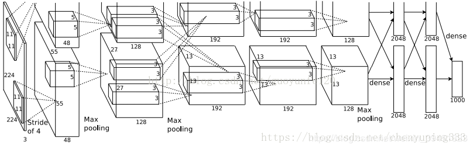

简介
AlexNet是2012年ImageNet竞赛冠军获得者Hinton和他的学生Alex Krizhevsky设计的。也是在那年之后，更多的更深的神经网路被提出，比如优秀的vgg,GoogleLeNet。其官方提供的数据模型，准确率达到57.1%,top 1-5 达到80.2%. 这项对于传统的机器学习分类算法而言，已经相当的出色.
论文：《ImageNet Classification with Deep Convolutional Neural Networks》
网络结构

上图所示是caffe中alexnet的网络结构，采用是两台GPU服务器，所有会看到两个流程图。AlexNet的网络模型解读如下表：
解读如下:
1 | 第一层：卷积层1，输入为 224×224×3 224 \times 224 \times 3224×224×3的图像，卷积核的数量为96，论文中两片GPU分别计算48个核; 卷积核的大小为 11×11×3 11 \times 11 \times 311×11×3; stride = 4, stride表示的是步长， pad = 0, 表示不扩充边缘; |
用caffe 自带的绘图工具(caffe/python/draw_net.py) 和caffe/models/bvlc_alexnet/目录下面的train_val.prototxt绘制的网络结构图如下图:
1 | yuyang@oceanshadow:~/caffe-master/python$ |
创新点
（1）成功使用ReLU作为CNN的激活函数，并验证其效果在较深的网络超过了Sigmoid，成功解决了Sigmoid在网络较深时的梯度弥散问题。虽然ReLU激活函数在很久之前就被提出了，但是直到AlexNet的出现才将其发扬光大。
（2）训练时使用Dropout随机忽略一部分神经元，以避免模型过拟合。Dropout虽有单独的论文论述，但是AlexNet将其实用化，通过实践证实了它的效果。在AlexNet中主要是最后几个全连接层使用了Dropout。
（3）在CNN中使用重叠的最大池化。此前CNN中普遍使用平均池化，AlexNet全部使用最大池化，避免平均池化的模糊化效果。并且AlexNet中提出让步长比池化核的尺寸小，这样池化层的输出之间会有重叠和覆盖，提升了特征的丰富性。
（4）提出了LRN层，对局部神经元的活动创建竞争机制，使得其中响应比较大的值变得相对更大，并抑制其他反馈较小的神经元，增强了模型的泛化能力。
（5）多GPU训练,可以增大网络训练规模.
（6）百万级ImageNet数据图像输入.在AlexNet用到的Data Augmentation方式有三种:
·平移变换(crop);
·反射变换(flip);
·光照和彩色变换(color jittering):先对图片进行随机平移,然后水平翻转.测试时,先对左上,右上,左下,右下和中间做5次平移变换,然后翻转之后对结果求平均.